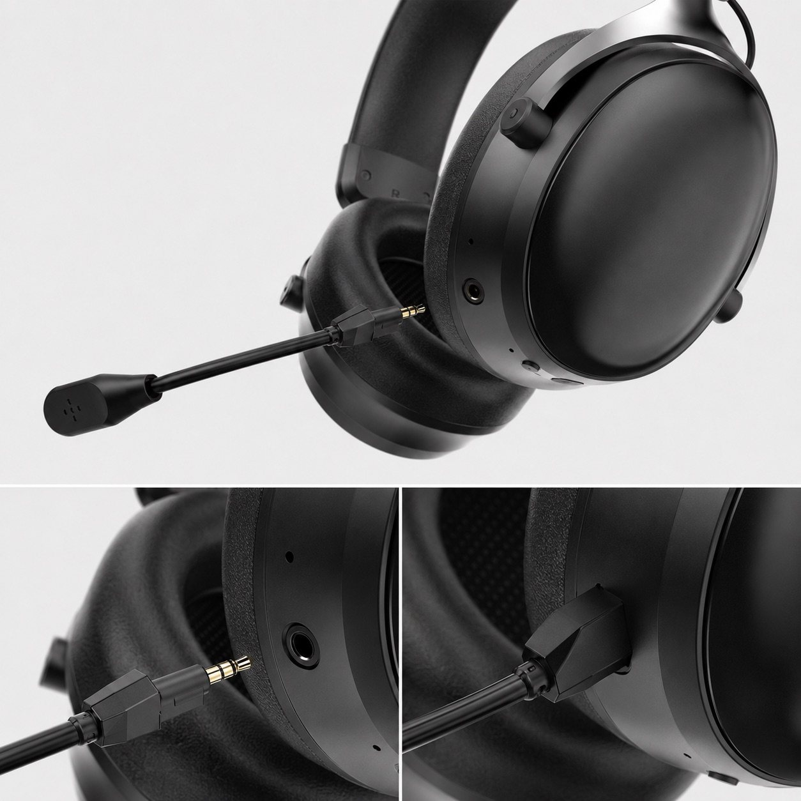
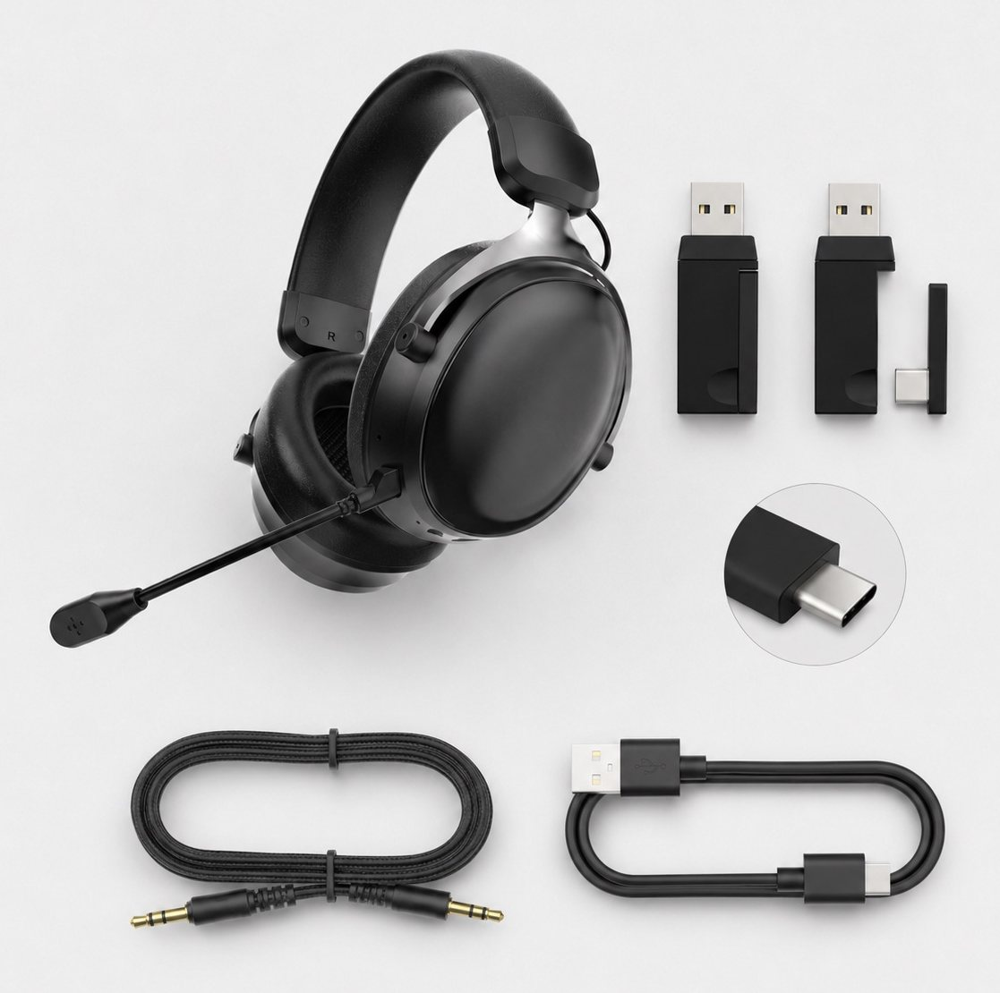
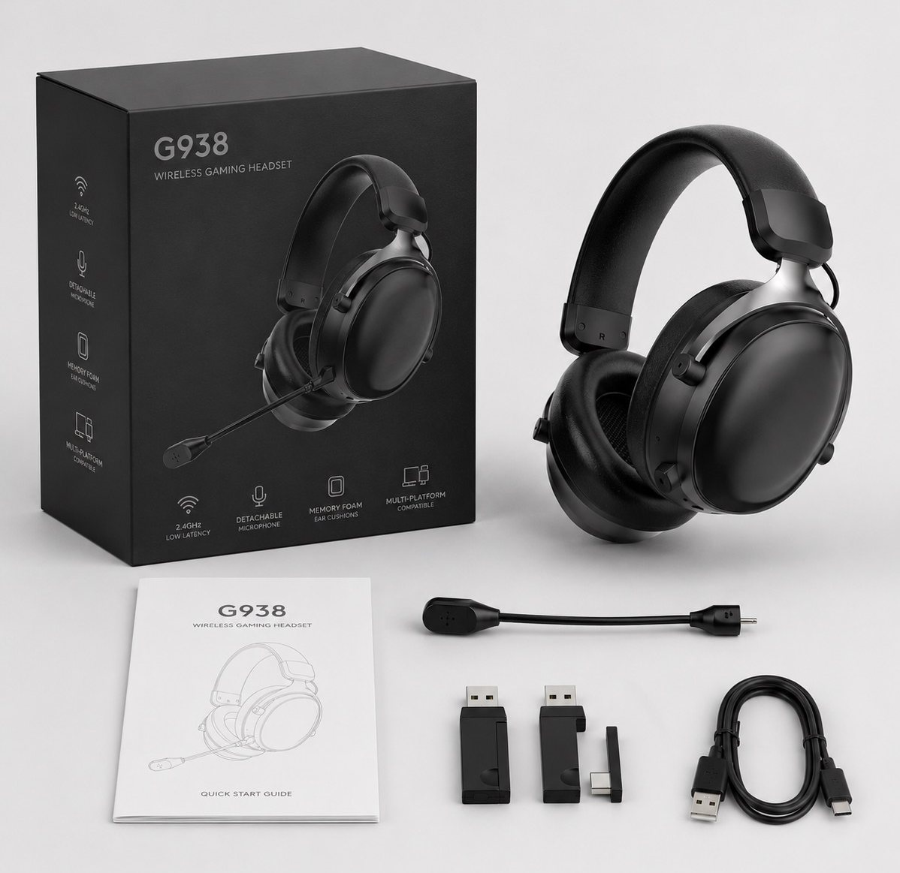
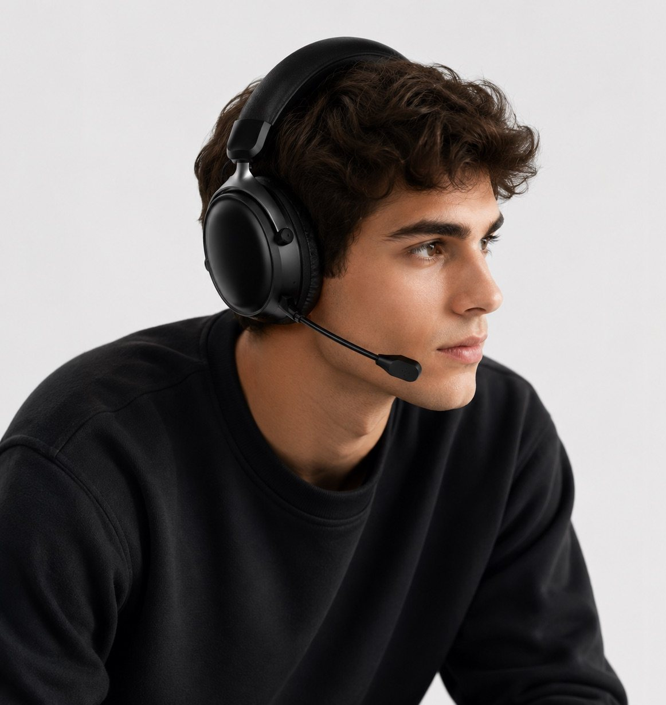
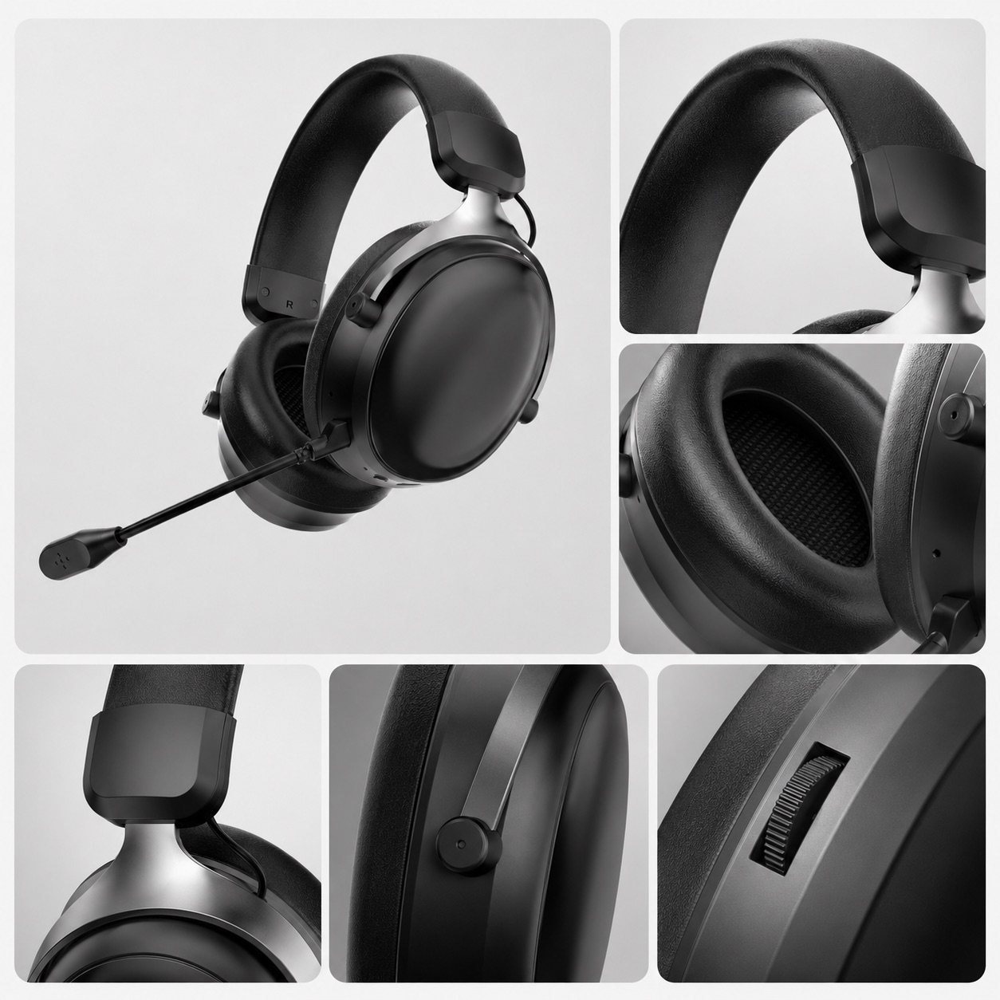
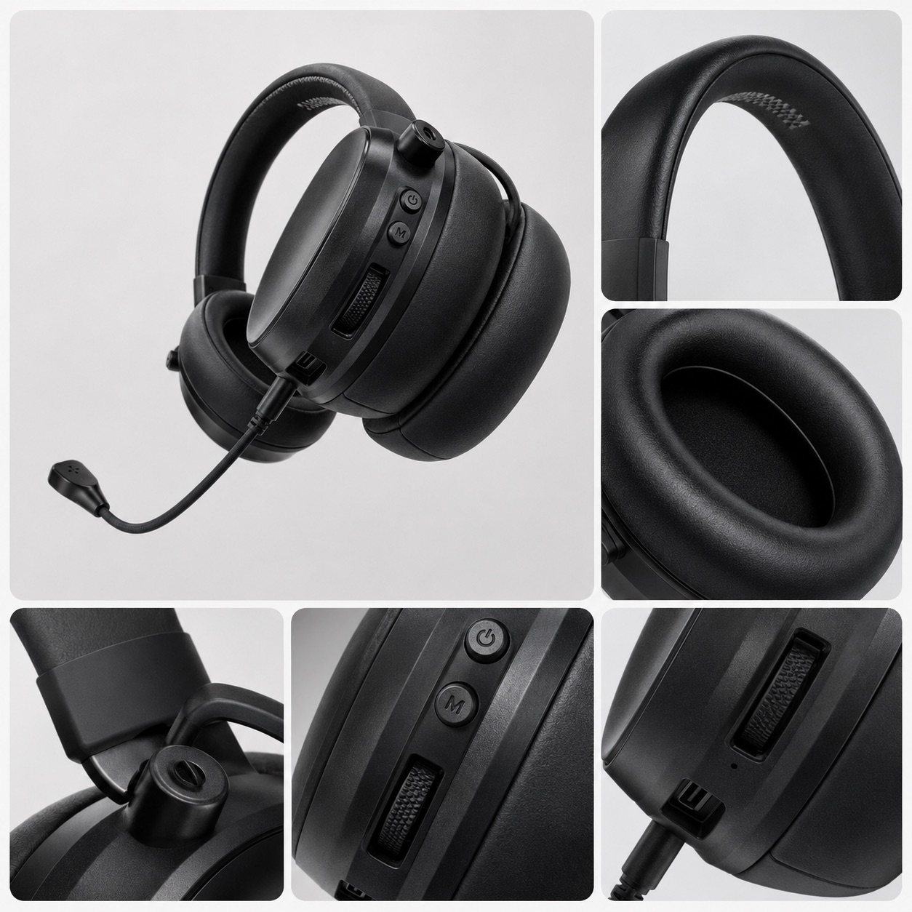

Detachable boom microphone
The microphone close-up helps buyers review the plug-in structure, microphone position and sample handling before approval.

G938 2.4G Bluetooth wired gaming headset
TALRIVO G938 is a documented tri-mode wireless gaming headset direction with 2.4G, Bluetooth and wired use, a 53mm driver, 1000mAh battery, detachable boom microphone, product videos, accessory set and packaging reference for importer, distributor and private-label sample review.

Short answer
G938 is a TALRIVO wireless gaming headset model page for buyers comparing a 2.4G, Bluetooth and wired headset direction before requesting samples. The page documents current product-sheet details, supplied images, detachable microphone reference, receiver and cable set, packaging reference and official video links.
Product videos
Watch the official TALRIVO G938 product film and gaming audio listening check, then use the product-sheet details below for model and sample discussion.
Product image evidence
Use these images as visual evidence for sample discussion. Final accessory set, packaging, logo area and document needs should still be confirmed for the selected project.

The microphone close-up helps buyers review the plug-in structure, microphone position and sample handling before approval.

The accessory image gives a clear reference for receiver, adapter, audio cable and charging-cable questions during sample review.

The package image supports logo, guide, accessory layout and packaging discussion without publishing commercial terms.

The wearing image helps buyers review over-ear coverage, headband position and boom microphone placement for sample feedback.

Detail views help buyers check headband padding, ear cushion shape, side control and adjustment areas before bulk discussion.

Additional detail views support headband, ear cushion, button and control-wheel review during sample evaluation.
Desk scenes help connect the model to PC, console and mobile-adjacent review contexts for channel planning.
Key points
Use the confirmed product-sheet data below to compare G938 before requesting a sample, packaging review or quotation.
The current product sheet lists a 53mm driver with 32-ohm impedance and a 20Hz-20kHz frequency response.
Listed playback time is approximately 50 hours with lighting off, with 3-4 hours listed for charging.
The current model documentation and accessory images show wireless use through a USB transmitter and Bluetooth mode, with wired use also documented.
The G938 image set shows a detachable boom microphone, full-coverage earcups, accessory set and packaging reference for sample discussion.
Verified specifications
Figures below describe the current documented version. Confirm the final sample, accessories and packaging before a bulk order.
Sample evaluation
G938 is strongest when the buyer needs one headset direction for 2.4G receiver use, Bluetooth pairing and wired fallback. Keep the sample record tied to the exact receiver, cable set, microphone and packaging contents being reviewed.
Customization
Product fit
Use these points to understand where this model fits in a product collection.
Product FAQ
G938 is a documented tri-mode headset direction for buyers comparing 2.4G, Bluetooth and wired gaming use, with model images, accessory references and sample-review questions.
The current sheet lists a 53mm driver, 32-ohm impedance, 20Hz-20kHz response, 1000mAh battery, approximately 50 hours without lighting and approximately 20ms 2.4G latency.
Yes. The current G938 design uses a detachable boom microphone for gaming communication and sample evaluation.
Check the 2.4G receiver, Bluetooth pairing, wired route, microphone behavior, wearing comfort, controls, accessory set, packaging contents and any document questions for the selected version.
Yes. Logo, color, packaging, manual language and accessory requirements can be reviewed after the sample version and order scope are confirmed.
Include destination market, sales channel, target devices, quantity range, sample timing, branding scope, packaging language and documents to check.
Related pages
Share the destination market, sales channel, target devices, quantity range, sample timing, sample feedback and customization scope for a model-specific G938 review.